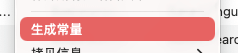

生成常量是 TransX 提供的代码集成辅助功能，能够根据在偏好设置中定义的命名规则，自动为本地化 Key 生成符合编程规范的常量标识符。此功能是连接本地化内容与应用代码的重要桥梁，实现了从本地化键值到代码常量的自动化转换。
核心价值：
生成的常量可直接应用于 Swift、Objective-C 等项目代码中，是构建健壮本地化架构的基础设施。
避免硬编码字符串：
// 不推荐：硬编码字符串，容易拼写错误
let text = NSLocalizedString("com.app.login.button.submit", comment: "")
// 推荐：使用常量，编译期检查
let text = NSLocalizedString(kLoginButtonSubmit, comment: "")类型安全：
重构友好：
统一规范：
文档化：
常量生成规则在 偏好设置 > 常量 中进行配置，提供丰富的定制选项：
1. 前缀配置
k、K_、CONST_、STR_等2. 命名风格
kLoginButtonSubmitKLoginButtonSubmitk_login_button_submitK_LOGIN_BUTTON_SUBMIT3. 分隔符处理
.）、下划线（_）、连字符（-）等4. 路径处理
com.company.app.
只保留后续部分）5. 特殊字符处理
以 Key 值 com.app.login.button.submit
为例，展示不同配置下的生成结果：
| 前缀 | 命名风格 | 路径处理 | 生成的常量名称 |
|---|---|---|---|
k |
驼峰命名 | 过滤 com.app | kLoginButtonSubmit |
K_ |
下划线命名 | 过滤 com.app | K_login_button_submit |
CONST_ |
大写下划线 | 过滤 com.app | CONST_LOGIN_BUTTON_SUBMIT |
| 无前缀 | 帕斯卡命名 | 过滤 com.app | LoginButtonSubmit |
k |
驼峰命名 | 保留完整路径 | kComAppLoginButtonSubmit |
STR_ |
大写下划线 | 仅保留最后两段 | STR_BUTTON_SUBMIT |
转换过程示例：
原始 Key：com.app.login.button.submit
com.app. →
login.button.submit. 作为单词分隔符 →
[login, button, submit][Login, Button, Submit]k →
kLoginButtonSubmit实时生成选项：
手动生成控制：
冲突处理：
Command 或
Shift 键多选）如果需要为整个文件或分组生成常量：
Command + A 全选所有条目如果修改了常量生成规则，需要更新已有的常量：
背景： 新项目开始，需要建立统一的常量命名规范。
操作步骤：
k，驼峰命名）Constants.swift）背景： 开发人员需要在代码中使用本地化文本。
操作步骤：
// Swift 示例
let buttonTitle = NSLocalizedString(kLoginButtonSubmit, comment: "登录按钮")
// 或者使用扩展简化
extension String {
static let loginButtonSubmit = NSLocalizedString(kLoginButtonSubmit, comment: "")
}
// 使用
button.setTitle(.loginButtonSubmit, for: .normal)背景： 项目较大，需要定期更新常量定义文件。
工作流程：
脚本示例（Swift）：
// 自动生成的常量文件
// LocalizationConstants.swift
import Foundation
// MARK: - Login
let kLoginButtonSubmit = "com.app.login.button.submit"
let kLoginButtonCancel = "com.app.login.button.cancel"
let kLoginErrorMessage = "com.app.login.error.message"
// MARK: - Profile
let kProfileTitle = "com.app.profile.title"
let kProfileEditButton = "com.app.profile.button.edit"背景： 老项目的常量命名不规范，需要统一调整。
操作步骤：
常量定义文件：
// LocalizationKeys.swift
struct LocalizationKeys {
// 登录模块
struct Login {
static let buttonSubmit = "com.app.login.button.submit"
static let buttonCancel = "com.app.login.button.cancel"
static let errorInvalidEmail = "com.app.login.error.invalid_email"
}
// 首页模块
struct Home {
static let title = "com.app.home.title"
static let tabProfile = "com.app.home.tab.profile"
}
}使用示例：
// 在 ViewController 中使用
let submitButton = UIButton()
submitButton.setTitle(LocalizationKeys.Login.buttonSubmit.localized, for: .normal)
// String 扩展
extension String {
var localized: String {
return NSLocalizedString(self, comment: "")
}
}常量定义头文件：
// LocalizationConstants.h
#ifndef LocalizationConstants_h
#define LocalizationConstants_h
// 登录模块
#define kLoginButtonSubmit @"com.app.login.button.submit"
#define kLoginButtonCancel @"com.app.login.button.cancel"
// 首页模块
#define kHomeTitle @"com.app.home.title"
#endif使用示例：
// 在代码中使用
NSString *title = NSLocalizedString(kLoginButtonSubmit, @"登录按钮");
[button setTitle:title forState:UIControlStateNormal];